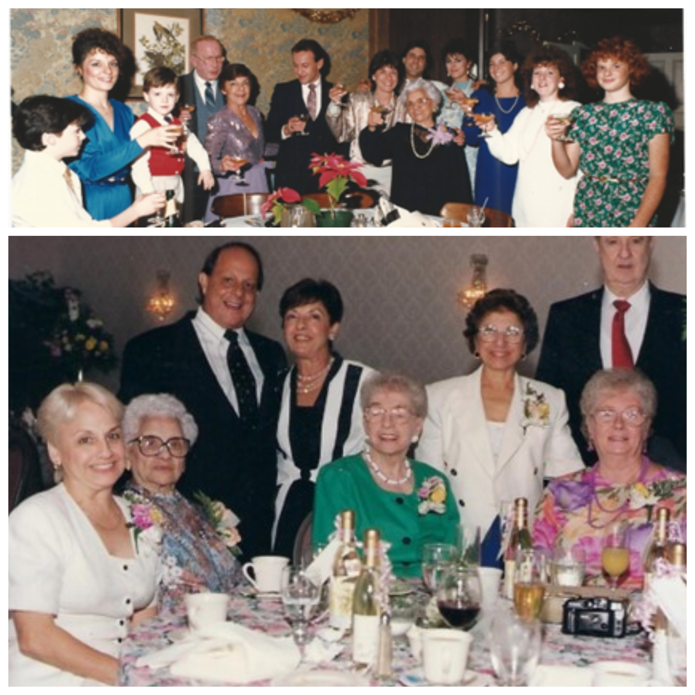

This book is about Grandmom Tursi. She was a tough lady. She stood 4 feet, 6 in tall and was 4 feet, 6 in wide. She killed bees with her bare hands and once faced down a gang of armed and masked thieves who were trying to rob the family scrapyard. They pointed guns at her and Uncle Al and ordered them to get on the floor. She cursed them out and refused to budge. Uncle Al almost died of a heart attack instead of bullets.
She was 100% Calabrese, and the Calabrese are a tough people. They had to be; Calabria had always known tough times. Calabria is the Southernmost region of the Italian peninsula. It is the toe of the boot across the Straits of Messina from Sicily.
It was settled by Greeks in antiquity who called it “Italoi” from which the rest of Italy eventually took its name. The Greeks built many cities in Calabria and it became part of Magna Graecia, or Greater Greece. Genetically, Calabrians are Greek and they spoke Greek until modern times. While the Calabrian Greek dialect is dying out, there were still remote mountain villages where Greek was spoken until the late Twentieth Century.
The Brutti were the next people to inhabit Calabria. They came from Lucania directly to the north from an area now mainly incorporated into the region of Basilicata. The Brutti were escaped slaves, and the name meant “rebels.” The Brutti sided with King Pyrrhus during the Pyrrhic War and were defeated by Rome. They then sided with Hannibal during the Second Punic War and were defeated by Rome again. The Romans stripped them of their land and reduced them to a state of servitude. The word brute derives from Brutti as the Romans associated the name with slow witted people and made it an insult. Northern Italians still think of Calabrians as brutes.
After being laid waste by the Romans, Calabria was next conquered by the Ostrogoths after Rome fell. King Justinian of the Byzantines, the emperor of the Eastern Roman empire, then reconquered Calabria in the name of “Rome.” Calabrians were incorporated into the Eastern Orthodox Church. While Calabria was never conquered by the Saracens, the coasts were repeatedly raided by them for plunder and slaves throughout the early Middle Ages.
The Normans were the next people to conquer Calabria, and they incorporated it into the Kingdom of Sicily. The Spanish (actually Catalans) conquered it next. Calabria became incorporated into the Kingdom of Naples. The Spanish treated it like they treated all places they conquered, and the Calabrians suffered from brutality, starvation and sickness. During the several hundred years of Spanish rule, the Turks expanded their way into Europe. Albanians fleeing Ottoman expansion in the Balkans settled in Northern Calabria and live there still. They are known as the Arbëreshë.
Calabria was next conquered by the French, and Napoleon made his brother-in-law the King. Calabria was later unified with the Kingdom of Sicily to form the Kingdom of the Two Sicilies. The last invaders were Piedmontesi led by Giuseppe Garibaldi. They unified and created the Kingdom of Italy. Italy became one country for the first time in its history in the 1860s. Calabria was now ruled by the North. They were told that Northern Italian was their official language, instead of Greek or the southern dialects of Italian, and they were all now part of the Roman Catholic Church, not the Eastern Orthodox.
Calabrians celebrated their new “independence” of belonging to Northern Italy by climbing en masse onto boats and sailing to the New World, settling throughout North and South America and Australia. Dont get me wrong, Calabrians are fiercely, proudly Italian. But they are also fiercely, proudly Calabrese.
Francesco (“Francis”) Tursi was born into a large family in the village of Terravecchia, in the province of Cosenza in Northern Calabria. It is in the mountains overlooking the Ionian Sea.
Some of his siblings settled in Des Moines, Iowa, and there is even a Tursi restaurant there. At the age of 22, Francesco left the village and took his 20-year-old bride Maria, and his little brothers, Pietro, aged 7, and Giuseppe, aged 15. They boarded the SS Alesia in 1896 and sailed for Ellis Island. The ships manifest is available through the Ellis Island project. Like so many others, Francescos profession was simply listed as “laborer.”
After arriving in the United States, they made their way to Philadelphia. Francesco named his son Peter, and we know him as Grandpop Pete. Grandpop eventually married Rose Giordano, the daughter of Pasquale and Lucretzia Giordano nee Biscairdi. We know her as Grandmom Tursi. The Giordanos also came from Cosenza in Calabria. They hailed from the village of San Lorenzo del Vallo in the heart of the land of the Arbëreshë. Thats right, Grandmom was probably Arbëreshë.
Grandmom was born in Philadelphia in 1896 shortly after her parents arrived. They spoke Calabrese at home and kept their Calabrese traditions. Grandmom told stories of her childhood, traveling from Philadelphia into the wild pine barrens of New Jersey by horse drawn wagon to work as seasonal labor in the cranberry bogs. She claims that her father fought off wolves with an axe. She told tales of working all day in the sun. The toilets were large, group outhouses. The boys would shake the outhouse when the girls were in there as a joke, but if they got caught, their punishment was to stand in the sun and dance all day.
Grandmom only had a third-grade education. She graduated from migrant labor to rolling cigars in a factory. New Jersey and Philadelphia grew a lot of tobacco back then. Grandmom eventually became in charge of a section of the floor. These were hard years. Child mortality was high. She was pregnant six times and had three children. Her only son, Francis, died at 18 months. But she raised her girls and took care of her family. She eventually made “big money” at the cigar factory during the Great Depression and supported the whole family. Her pride and joy was her fur coat. Pictures of her going on church sponsored trips always featured that fur coat, Winter, Fall, Spring or Summer. It was during this time that she cemented her role as matriarch, a role she held onto for the rest of her almost 105 years of life.
Back in those days in South Philly, everyone lived in rowhouses. The family next door was Irish, the Forbes, and Anna Forbes was one of Grandmoms best friends. The first floor of each row house was one set of stairs above the ground floor, and the “basement” was at ground level. The basements had a stove and sink. Grandmom and Anna nevertheless decided that their kitchens were too small, so they both expanded them too. The downstairs kitchens were for the big projects like canning tomatoes or making Cannariculi, and the upstairs kitchens were for family meals. In the front yard, you grew herbs like basil and mint. The Forbes also kept a goat. They had a son who was Mom (Aunt Gings) age: Hainsey. The two of them, would walk the goat around the neighborhood. Once the Forbes had bought a bunch of chickens at an auction. They stored them in their upstairs bedroom until they could bring them to their farm in New Jersey. Mom had a sensitive stomach and liked the plain Irish food, while Hainsey enjoyed the spicy Calabrian cooking. They would often simply switch houses and eat dinner at each others house.
The ladies also made holiday cordials in the basement kitchens. They would make homemade cordials and give them as gifts or serve them. A popular favorite was Rock and Rye, a combination of rye whiskey, rock candy sugar and citrus and spices. While Grandmom was Italian, I never saw her drink wine. She would occasionally have a bit of beer with a big head. Grandpop Francis Tursi was also a beer drinker. He would walk down to the corner tap house with his glass pitcher and fill it up, then walk back to sit on the stoop and drink beer and talk to the neighbors. Grandpop Pete, however, was a scotch drinker. Once he bought at auction an old fire engine that he kept parked at the scrap yard. When drunk, he would drive it up and down the neighborhood, ringing the bell and giving rides to the kids.
Grandmom believed in exercise. After waking early to pray the Rosary and attend the first daily Mass, she liked to walk every day, usually with a grandchild in tow and a fast food restaurant as a destination. IHOP was a favorite. One famous IHOP adventure occurred when the sunlight shining through the window became focused by her glasses and caused her purse to burst into flames. The walks could be long. She once took Eric through the “worshk” (the woods) in the pine barrens when we lived in Medford, and she got lost. They walked five miles. Trips could also be by bus. When Rose was 10, Grandmom took her to Hershey Pennsylvania. She was there for the chocolate. When Eric was six and she was 81, she took him on a bus trip to Key West. She was fascinated by Hemingways cats.
Grandmom did not bake much because in those days there was a bakery every ten feet. She never learned to drive; she would walk to the markets and the bakeries. Grandmom loved to cook, almost as much as she loved to eat. Here are a few of her recipes. None were written down. All measurements, even the ones for baking, were by eye and by feel. Thus, every family member has a slight variation. Likewise, the cooking times are all approximate. Something is done when it is done. Do not leave the kitchen. Pour a drink, put on some music, gather some family, and stay in the kitchen while you cook. Taste, smell, feel. No precision of recipe can substitute for you being there at the right moment to lower the heat, remove the pot, turn the meat. These recipes are guidelines. That is why Grandmom did not need to write them down.
Every celebrity chef has a catch phrase. Grandmom used hers whenever she was left in charge to watch the grandchildren. Instead of “I will feed them dinner,” or “I will cook for them,” Grandmom always said, “Ill make em eat.” So, make these recipes, call your loved ones to the table, and make em eat.
Grandmom was a creature of habit. One thing that she liked in her meals was predictability. That was why she had a weekly menu plan and she stuck to it.
Sunday was all about the gravy. In classic Italian American fashion, after Mass, you would start the gravy for Sunday dinner and it would cook for the better part of the day. The gravy would be full of meat that would literally melt into the sauce. You would start the meal with a salad of greens swimming in oil and vinegar, or a tomato salad, and you would enjoy the gravy with a generous helping of Italian bread from the Termini Brothers Bakery. Bury the entire plate under parmesan and red pepper flakes.
Monday was for chicken soup, with some pasta and plenty of escarole (pronounced “schkaroll”). All of the Italians ate chicken soup on Monday. I dont have her recipe, but mine is included.
Tuesday and Thursday were pasta nights. Pasta was often homemade. She liked thick, hearty pastas, like perciatelli, which is a thick, round, long noodle. She also loved thick macaroni, like rigatoni. Grandmom would make a long curly pasta called strozzapreti by rolling out the pasta on the chitarra and then taking the long, round noodles and winding them around a knitting needle. She would carefully slide the noodles off and let them dry into long spirals. They look like long nooses. The name translates as “choke the priest.” Was it because the priest ate so much that he choked? Or did they hang the occasional priest? Pasta was always served in a red sauce with some kind of meat: propets or brazhool are just two examples.
Wednesday was the one night where she could break free. It could be anything: stuffed breast of veal, veal scallopini, or some kind of lamb, who knows? Roast pork was always an option, with lots of garlic and rosemary. She would serve this with a bitter salad made of radicchio. Sometimes the girls would cook. Aunt Marie made the best lasagna. Aunt Jo was famous for her veal scaloppini.
Grandmom lived most of her long life before Vatican II. Friday was a meatless night. One “go to” dish was pasta fagioli (“pasta fazhool”). Otherwise it was fish. I have included a Grandmom recipe for stuffed blue fish served in tomatoes.
Saturday was steak night. Grandmom cooked the steaks in a cast iron skillet. She fried them in olive oil until well done and served them with fried potatoes. I am not going to give you a recipe for a ruined steak. I will give you the recipe for fried potatoes. My only memory of Grandmom cooking steak was when she was watching us one night because Mom (Aunt Ginger) and Dad (Uncle Bob) went out. She vowed she would make us eat before they left. That night, she put the steaks on a baking sheet and put them under the broiler. The fat started to splatter and the steaks all went up in flames. She pulled the sheet of steak inferno out of the oven, threw it into the sink and put the flames out with water. She then calmly began plating up the steaks and serving them. We were horrified
Grandmom loved fresh fruit. There was always a bowl of fresh fruit left out on the table. While they are not very Italian, she loved bananas. Once, while Mom and Dad were traveling with Grandmom, they visited Greece. They were taking a tour of Corinth, and the tour guide was explaining where St.Paul preached when Grandmom wandered off. She then started to frantically call Mom over. “Ginger! Ginger! Come here.” Mom rushed over and saw Grandmom staring at a vendors cart. “Look at the size of those oranges,” she said. She was sightseeing in her own way.
Do not forget about the seasonal meals. Easter was all about lamb. It was one time of year that Grandmom would serve a cheesy dish. She might buy cheese ravioli to go with the lamb. Christmas Eve was the feast of the seven fishes. It featured eel, fried fish and cannariculi. They are explained below. Christmas Day was a feast, and it featured meat. St. Joseph Day was homemade lagna noodles and ceci beans in a red sauce. And it was not St. Josephs Day without zeppole from the bakery.
Breakfast (or Breakfess as she would call it), was Grandmoms favorite meal of the day. Ok, it was probably tied with lunch and dinner. But she believed in a hearty breakfast. And that meant fried: fried bacon until crispy, fried bologna, fried eggs, and fried potatoes. What did she fry everything in? Bacon fat. Never, never throw out your bacon fat. Pour it into a container and store it in the freezer. Then you can cook like Grandmom. Rather than recipes, I will just share some of her favorites.
Fried Bologna. Grandmom owned a house “down the shore” in Wildwood, New Jersey. This is how Mom (Aunt Ging) met Dad (Uncle Bob). The older grandkids have fond memories of that house. Grandmom would always show up with a whole 5 to 8-pound loaf of Dietz and Watson Bologna. She would slice it thick and fry the slices until crispy. For the technique: slice pieces about 1/2" thick, slice a couple of notches along the outside edge to prevent curling, then fry it in butter or olive oil in a hot (preferably cast iron) frying pan. According to Lizabeth, “this was, and still is, the only time that I would look forward to eating bologna. Somehow, when you slice it nice and thick and then fry the heck out of it, it becomes something else entirely.” Melt a little cheese over it to make a sandwich. Or use it on the bottom of a fried egg for an egg sandwich. Or just dip it into some spicy mustard.
Fried eggs. Grandmom fried her eggs, sunny side up, in lots of fat until the edges are crispy. Mom waxes nostalgic about those fried eggs. Liz remembers Grandmoms secret. “Use a LOT of bacon fat. Get it nice and hot in a cast iron frying pan and then break the egg into the hot fat. It starts to cook immediately. Salt, pepper, hot pepper flakes or diced fresh hot pepper along with some cheese on the top if you like.... its all you need.” Liz did not always like her fried eggs. She especially did not like runny eggs, and Grandmom always made them runny. So, Grandmom used to say “Lizabit, if you eat your Fried Eggs, angels will dance on your tongue!” According to Liz, “now, being a good Catholic girl.... who would not want angels to dance on your tongue?? What was to question? Angels were not to be seen and my loving Grandmom was telling me this, so it had to be true, right?? Well, it worked and I ate my eggs!! Still waiting for the angels though!!”
Speaking of Wildwood, I will relate some more Liz memories: “Grandmom loved to cook when she came to Wildwood. That was always a special time to see her come for a visit. But, occasionally, she would keep an eye on us Tate kids (there are 6 of us). When I say "keep an eye", think like an Eagle eye! You never got anything by her. One morning, Holly, Mary and me wanted to sneak out of the house early. I think we said were going to the beach to see the dolphins jumping. This may or may not have been the whole reason (just sayin'). But we knew we could not pass by Grandmom easily. So, we decided that we should hide her glasses so she could not see, and for added good measure, we'd also hide her dentures, because God knows she would never leave the house without her teeth. Well, we may have gotten out, but getting back in was not as easy because we really riled her up. I'm pretty sure we were met on the front porch and by then Grandmom had a broom in her hand that she proceeded to use to beat the crap out of us for hiding her things. She did not have a sense of humor at all.”
Let me add one thing about Grandmoms sense of humor. Dad (Uncle Bob) loved to tell jokes around the dinner table. One day he asked, “how do you keep an idiot in suspense?” “How?” Grandmom asked. “I will tell you tomorrow,” he said. We all laughed. “No, tell me now!” she demanded. “That is the joke, Ma,” he said, “you keep them in suspense by telling them to wait until tomorrow.” “Why dont you just tell me now?” she insisted. “Ma, that is the whole joke,” he repeated, as we all howled with laughter. “Fine.” She said, “I dont want to know.”
This recipe comes from Aunt Marie. They are called “forgotten” cookies because you put them in the oven, turn off the heat and forget about them. And lest you think that they are not Italian, they are actually meringues, which is a popular confection in parts of Italy. I am not rewriting it. I am posting it in her handwriting.
We cant finish without imparting a few pearls of Tursi wisdom. Speaking of pearls, she loved her pearls. She thought everyone did. That was why, when she wanted a head rub, she would tell the girls that there were pearls hidden in her hair and ask them to dig around in there to look for them. There never were any—except one time. Grandmoms hair pins had faux jewelry in them. Once a fake pearl or gem must have fallen off of one and become lodged in her hair. One lucky little girl was poking around up there, and out fell the little bit of “treasure.”
Grandmoms other favorite manipulation was her imaginary “list.” She was constantly telling you how many points or stars you had earned (or lost) based upon your behavior, like fetching her a glass of ice water to enjoy while watching Laurence Welk, or refusing to do the same. No one ever saw the list, and there were never any actual rewards or punishments doled out. Your stars changed at random. This was either an ineffective behavior modification technique or a valuable life lesson, depending upon your perspective.
When saying the following, be sure to use your Grandmom Tursi voice. That means skipping hard consonants like “t” (as in “This chair is comferble”) and inconvenient syllables (as in “Ew, you are mis-a-ble”). Without further ado, partake of some Grandmom Tursi sayings:
Never trust a man who likes cats. (Women can like them, but not men).
If bullshit were music, you would have a string band. (Said in response to bragging by Dads father)
An angel will come by and say, “Amen” and your face will freeze like that forever. (Said in response to children making faces. Apparently, angels are malevolent).
“Rose Tursi, what are you doing here?!” (This was a common segue in any story told by Grandmom. Apparently, her friends and acquaintances were always suitably impressed when she made an entrance into the scene).
Pee in your hands and drink it. (Said to children on car trips who complain about being either thirsty or having to use the bathroom).
Petah, youre a liah. (Peter, you are a liar. Grandmom remembering sweet nothings she would say to her departed husband).
Half a pint. (This was her term for any small child full of piss and vinegar. Her brother, Uncle Lennie (Leonard) was a half a pint, and so was Eric).
Lily, wash your face. (Said to “Aunt” Lily when she would the call to have the Malocchio removed. She called it the Malocch. Grandmom would say special prayers in Italian, called “The Overlooks,” and then tell Lily to wash her face. Lily became known as “Lily-wash-your-face,” as in “Hey, Lily-wash-your-face is on the phone.” I once had a headache, and Grandmom did the overlooks for me. The headache went away immediately. Who would cast the Malocch on a nine-year-old kid?)
Are you growing a beers? (She meant “beard.” This was said to any man who had more than a days growth. No one in the family dared to grow a beard while she was alive).
Itd be a sin to let it go to waste. (This was said before Grandmom would reach for a third helping of whatever was left on the platter at dinner. Grandmom would always insist on a small plate of food, and then constantly refill it. She would occasionally spear food from the plates of nearby diners too. In fact, she wasnt even that picky about whose silverware she would use to do it. If there was a fork within arms reach, it had a better than even chance of ending up in her grasp. Sometimes after dinner there would be a cutlery collection around her plate. Forks were also good for gesturing, pointing at people and stabbing the air to make a point.
I ate it, didnt I? (Grandmom rarely complimented Moms cooking. When asked if she liked it, this was the usual response.)
A gava deutz a Nanna, a bella dotti nanna. (Okay, that is phonetic. I am sure that this is as close to the original as gandaleek is to cannariculi. It was the only line we can remember from a lullaby she used to sing. The gava duetz was a horse, and that became Dads nickname for Grandmom).
Grandmom had a creative side. She always had her knitting needles in her hands, and she did amazing work. She also told stories and populated the world around with imaginary creatures. Michelle remembers that as she would walk past the sliding glass doors, Grandmom would point outside at the woods and call, “look, there is Goldilocks!” When Michelle would run back, she would say, “Oh, you just missed her.”
Not all of Grandmoms stories were that mischievous. Lizbeth relates that when she was in elementary school, and the family would visit Grandmom at her house in South Philly, she would go downstairs to the cellar. There were double doors down there that were closed with a lock, which intrigued her. When she asked Grandmom what was behind the doors, Grandmom told her a beautiful story about a magical land.
“Lizabit, this is where Betsy the cow lives in her magical garden. The meadow is so green and there are flowers everywhere. Betsy roams the meadow in the sunshine and grazes on the flowers all day. The fairies fly overhead to keep an eye on the garden. If you open the door, the magic will go away, and the garden will disappear. So will the fairies and the flowers. So, we dont open it.”
Liz would not dream of ruining the magical land. It was enough to keep her from ever wanting to open those doors. Many years later, burglars broke into Grandmoms South Philly home, and unaware of the magical hazard, they ripped open the doors. It turns out, that was where Grandpop Pete stored his guns and knives. Grandmom made up the tale to keep the Grandchildren safe.
What book of Italian heritage would be complete without weddings and funerals? At every wedding, Grandmom was in charge of the money bag. In addition to, or instead of gifts, guests would throw some money into the money bag -- the buste. In our family, Grandmom held onto the bag. It was safer than Fort Knox in Grandmoms hands.
And now I will end by discussing Grandmoms funeral. She was buried in Holy Cross Cemetery in Pennsylvania. The day before the funeral, I went to the funeral home with the three daughters: Jo, Sarah, and Ginger. We identified her, and then her daughters started to fuss over her body. She just did not look right. They were in there poking, and prodding, pulling and fixing. They looked like the three Fates. Suddenly they stopped, their six hands tangled in her hair, and they looked at me. “Is this okay?” they asked. “Yes,” I replied. “She would have loved it. Keep digging, you might finally find the pearls in there.” They suddenly realized what was missing, her glasses. “Ill go get, them!” Aunt Marie announced. “Ill go with you,” Aunt Ginger declared. “Ill go have a smoke!” Aunt Jo chimed in. Then poof, they were gone, and I sat in their parlor alone with Grandmoms body.
The next day, we had a full mass. Everyone wore dark colors but Mark. He showed up in a brightly colored pastel suit. Aunt Marie was scandalized. She then handed out the readings. In keeping with Italian tradition, only the boys had a role. There was almost a mutiny. In full rebellion, Mark gave his readings to Rose and Holly. After the Mass, we headed to the cemetery for the interment. Pictures of the gravestone, and that of Grandmoms parents are below. On the way back, my limo broke down. When they got it going, the AC was out. We sweat through our funeral clothes by the time we arrived at the lunch. Grandmoms girls had decided to give the guests a choice of three entrees, all Grandmom favorites: prime rib, veal parmesan, or deviled crabs. I was torn. I finally settled on the veal parm, and sat down next to Jimmy and Jared. Bastards. They had each ordered two entrees. “Wait!” I called to the waiter, “bring me the deviled crab too!” I couldnt see Grandmom off without a full stomach. After all, as she always said, “when you die, all you take with you is what you have in your belly.”